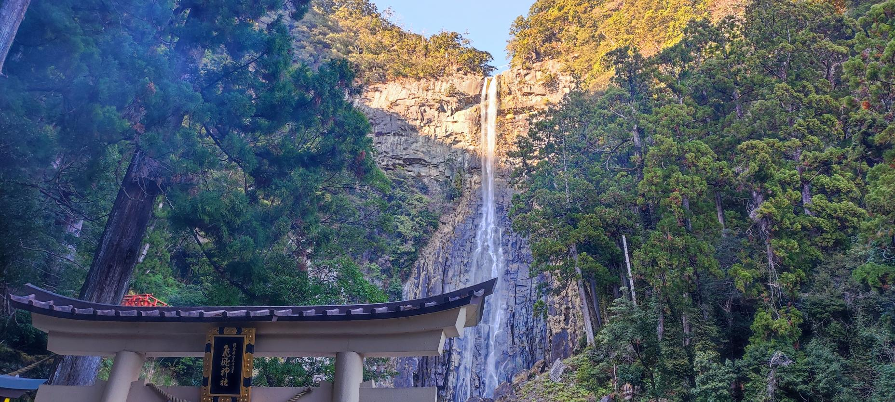
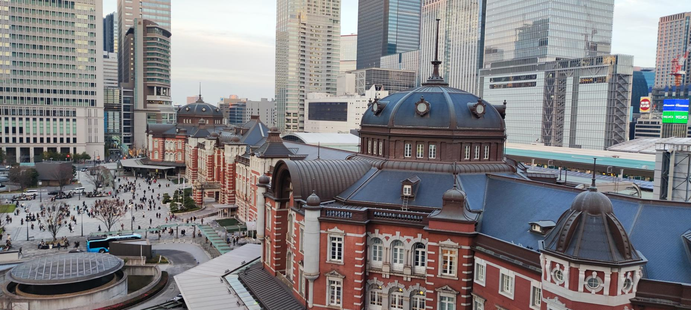
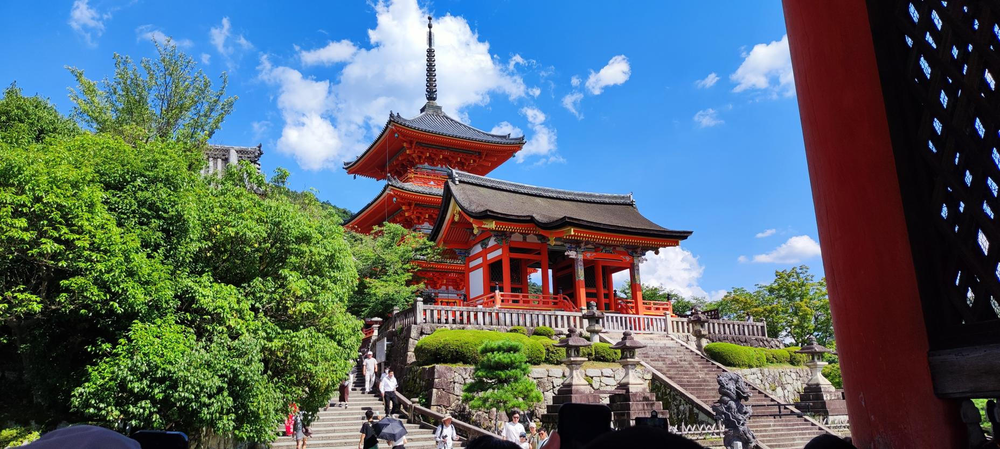
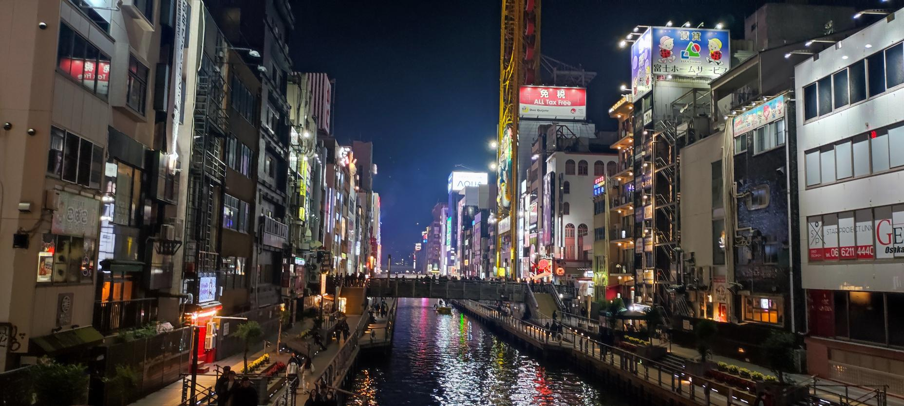

Travel
Japan
Mount Fuji from Chureito pagoda (Yamanashi
prefecture)

Kumano Nachi-taisha (Wakayama prefecture)
Miyajima (Hiroshima prefecture)
Golden Pavillon (Kyoto)
Shinjuku (Tokyo)
Matsumoto Castle (Nagano prefecture)

Tokyo Station (Tokyo)

Kiyomizu-dera (Kyoto)
Tokyo (from Skytree)
Tōdai-ji (Nara)
Silver Pavillon (Kyoto)
Zenkō-ji (Nagano)
Atomic Bomb Dome (Hiroshima)
Kenroku-en (Kanazawa)

Dōtonbori (Ōsaka)
Noboribetsu (Hokkaido)
Hakodate (Hokkaido)
 Otaru (Hokkaido)
Yama-dera (Yamagata prefecture)
Nikko (Tochigi prefecture)
JR East Series E353 "Fuji Excursion" at Shinjuku
Station
Shinjuku Kabukicho
Otaru (Hokkaido)
Yama-dera (Yamagata prefecture)
Nikko (Tochigi prefecture)
JR East Series E353 "Fuji Excursion" at Shinjuku
Station
Shinjuku Kabukicho
Otaru (Hokkaido)
Yama-dera (Yamagata prefecture)
Nikko (Tochigi prefecture)
JR East Series E353 "Fuji Excursion" at Shinjuku
Station
Shinjuku Kabukicho